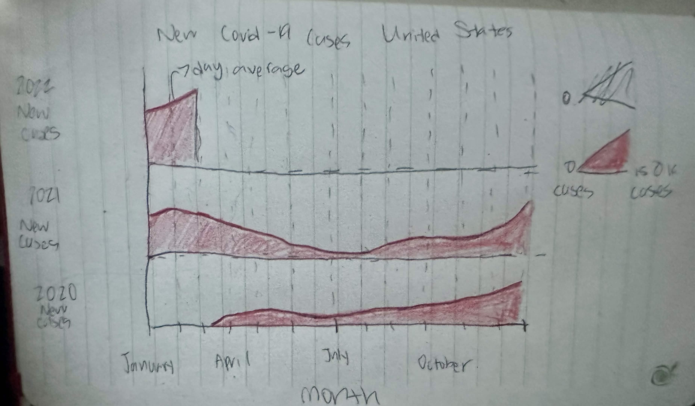
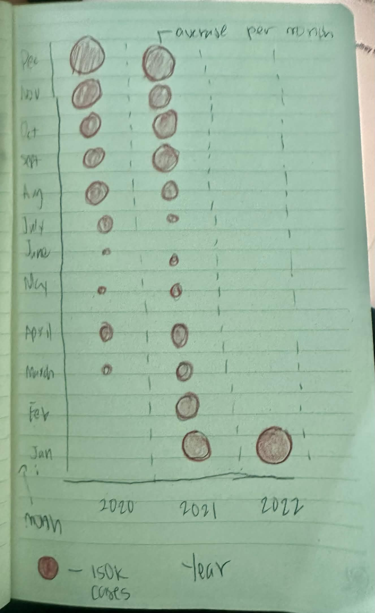
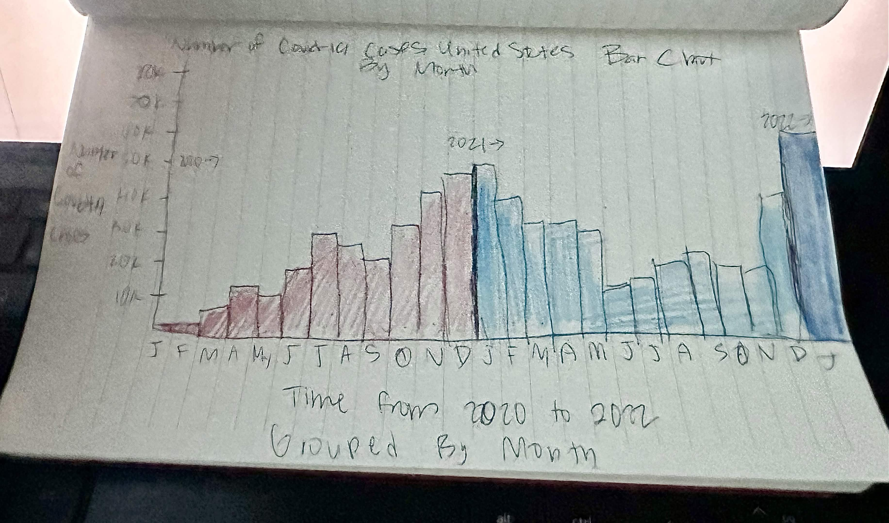
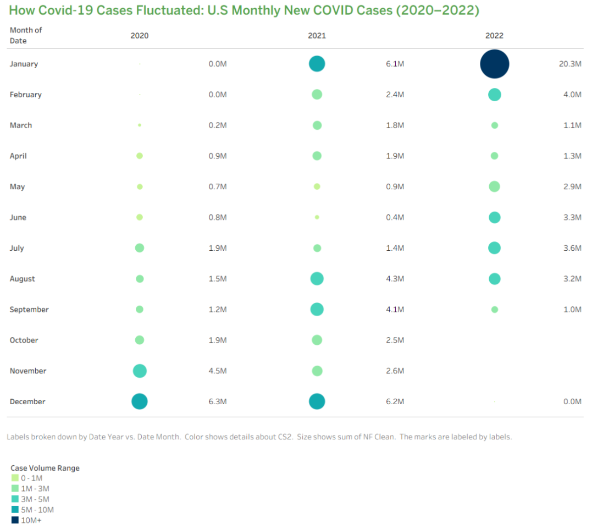

Reading & Critique

Insights about the data/visualization:
- Immediately, I notice a circular diagram that is structured around the linear yet repeating nature of years. It splits the circular area into sections and labels the months at four points, while labeling the 3 years along the same line.
- I notice a scale at the top left that goes up to 150k cases, indicating to me that the red area is measuring the number of new COVID-19 cases at a certain time of year.
- Because one axis is years and the other is new COVID cases, it seems like this visualization is seeking to depict how the number of new reported COVID-19 cases has changed over the course of 3 years (2020, 2021, and 2022).
- There are several trends apparent in the data regarding troughs and peaks. The first one that stood out to me was the seemingly exponential increase in cases as the graph reaches towards the beginning of 2022. This also happens to be where the data ends, which suggests to me that the graph's purpose was to compare their present situation with the past.
- I also notice that there might be a seasonal relationship with the troughs and peaks. In both 2021 and 2022 there seems to be an increase in the number of cases during the months of December–January. In 2020 this is around where the reports begin, though I'm not sure if this is also related.
- During the months between April and July in both 2020 and 2021, there seems to be a slight decrease in the number of cases.
- I see a label that says "7-day average." This label makes me think that the red area is actually showing the number of cases within a one-week time period.
Design Critique:
DESCRIBE YOUR CRITIQUE IN 1-2 PARAGRAPHS.
This visualization utilizes very unique visual encodings. For instance, the shape and positioning of the graph as a circular swirl is able to effectively represent the scale of time to emphasize the seasonal relationships that were discussed in the opinion piece. The months of the year for 2020, 2021, and a little bit of 2022 are directly on top of or next to each other, which easily allows for a direct comparison. Additionally, shading in the area under the line gives it more visual coherency, as simply being a line graph might have been somewhat more confusing since the whole visualization would just be lines. This choice of a shaded line graph was well suited for this type of quantitative data. However, although the circular structure is interesting, it may make the visualization seem cluttered if we were to increase the time period. Additionally, because of how circumference works in circles, I wonder if this is causing some type of distortion in the visualization. Towards the center, the circumference is much smaller, indicating that there is less area to represent the full number of cases compared to the outer area of the circle. I believe that the visual encodings really emphasize the seasonal trends as stated previously. The area around January 2022 is significantly wider than other time periods. According to the opinion article, they predicted that in January 2022 they would "likely see a record number of cases," and the visualization communicates this projection effectively. The article also discusses how often cases rise rapidly and fall just as quickly, which is clearly seen in the visualization. The axes labels are one of the strongest points of this visualization — we are clearly able to see the number of cases, the scale of measurement, how time is structured, and the months of the year. There is also clear spacing and layout between the years, as no data overlaps other data, and the dotted sections equally represent the 12 months evenly. However, I wonder if the differences in lengths of the months were accounted for, though that is likely insignificant. Reading the design was very intuitive for me, as I was able to simply follow the circular swirl in order based on time, though my eyes were first drawn to the January 2022 data before I made my way through the rest of the visualization.
The majority of the data in this graph is from 2020 and 2021, and based on the article, it seems like the goal was to create a projection for January 2022. Based on how the data is displayed, I immediately thought that this was simply a report of the historical data up until the present day. However, I am now somewhat confused about whether the data presented in January 2022 is historical or just a projection. In addition, the article mentions that "reporting of cases is often delayed during the two weeks beginning shortly before Christmas until shortly after New Year's Day." This makes me cautious about whether the high January numbers were truly affected by the delay. This is not communicated well in the visualization, which I feel is a major concern because it presents an illusion that there is something about the New Year that is actually causing this trend, since the only other axis shown is time. Additionally, there is no distinction between which cases come from the new Omicron variant and which came from another variant of COVID-19. The article also briefly discussed that this variant was less likely to result in deaths or hospitalization, which suggests some level of less severity, but this isn't communicated by the visualization either. This opinion post was published in the New York Times, so the target audience is likely the general public. Despite the concerns about how the data is displayed, I believe that the general public should be able to easily interpret the graph, as there are only two axes of data and it can be read similarly to a standard line graph, just in a circular fashion. There might be some difficulty interpreting the scale of the number of cases, though, since the label only goes up to 150k and many parts of the visualization seem to exceed that scale. If the main takeaway is that new cases are expected to rise in January 2022, this is easily understood. However, if the emphasis is on the Omicron variant specifically, then it is unclear that this is what the graph is trying to depict, as I don't think the average audience, including myself, has much familiarity with the different COVID strains.
Visualization Sketches

Design Rationale for Sketch 1:
- For this sketch, my motivation was to address the issues I had with the circular shape of the original visualization. I was concerned that the data might not be accurately represented in terms of scale, since the center of the circular swirl has less circumference than the outer areas. Additionally, the graph has become more scalable and will likely be less cluttered if we were to add more years of data. Because we have removed the circular shape, it is also somewhat easier to interpret the thickness of the shaded region, as each axis is laid out horizontally.
- I was hoping this graph would communicate the same ideas as the original but in a more digestible way. We have split the axes of year and month to ensure that the new cases still line up by month across years. This allows the viewer to still analyze the seasonal trends similarly to before, but now they only have to compare in a vertical direction rather than along a circular axis.
- I believe what worked well in this visualization is that we are clearly able to distinguish the yearly data and see the general trends that line up over the years, just as in the original. However, some of the original issues persist. For example, there is still a lack of a numerical scale that would allow for a numerically accurate understanding of just how many cases there are, as we still have to rely on our own visual interpretation of the thickness of the shaded region in comparison to the provided scale in the legend.
- In the next sketch, I want to see if we can utilize an interesting use of shape that does not cause potential distortions as in the original visualization.
Title: New Covid 19 cases United States Weighted Dot Plot

Design Rationale for Sketch 2:
- My motivation behind generating this sketch was to apply the use of shapes in a visually appealing way that is also meaningful and makes sense for encoding the data. In addition, I wanted to ensure that no information was potentially being distorted.
- I was hoping that this graph would communicate a simpler month-based analysis. The opinion post seemed to be mostly concerned with the monthly and seasonal trends in the data, so it made sense to me to group the information by month to reduce the need to compare each individual point in time to the scale. Additionally, we can still see the trends by lining up the years like before in the first sketch.
- I think what worked well is that the visualization's use of weighted dots has a strong mental encoding, as it is likely immediately clear to the viewer that larger dots indicate more cases. However, similar to both the original design and Sketch 1, there is no clear indication to the viewer of exactly how many cases are actually present, as the scale might be hard to apply to dots not of a similar size. Additionally, as circles become bigger, what increases — the area or the circumference? This is not made clear here.
- In the next sketch, I want to explore a visualization that takes into account this issue I have discussed regarding a difficult-to-interpret visual scale.

Design Rationale for Sketch 3:
- My motivation behind this sketch was to expand on Sketch 2 so that there is an easy, numerical scale that presents the data. This is so viewers can better understand exactly how many cases each month and year can be associated with. Therefore, instead of a weighted dot plot, I tried to use a bar chart in an interesting way. The y-axis has the number of new cases on a 10k increment scale, so viewers know with a precision of 10k just how many cases were associated with each month and year.
- I wanted it to communicate similar ideas to Sketch 2 due to the monthly grouping. Although the seasonal patterns are less emphasized due to the years no longer being comparable side by side, I accommodate for this using a color encoding for each of the years. Therefore, viewers are still able to see somewhat of a trend based on the months.
- This graph is able to nicely communicate a specific range of numbers to describe how many cases were actually seen. However, because it is just one long bar chart, we lose that direct comparison of the seasonal trends. Also, the x-axis becomes a little cluttered listing all of the months.
Final Visualization Design

Final Writeup
For my final visualization, I chose a weighted dot plot that displays monthly new COVID-19 cases across 2020, 2021, and 2022. The primary message I'm trying to convey is how the volume of new cases fluctuated on a monthly and seasonal basis across the three years, making it easy to compare the same months across different years. I used circle size to encode the sum of new confirmed cases, as larger dots immediately communicate higher case counts in an intuitive way. I also used color to encode case volume ranges (0–1M, 1M–3M, 3M–5M, 5M–10M, and 10M+), which acts as a secondary encoding that reinforces the size and makes it easier to quickly categorize months without needing to interpret exact numbers. The months are laid out on the y-axis and the years on the x-axis, which allows for direct vertical and horizontal comparisons. For instance, you can easily scan across a row to see how January changed year over year, or scan down a column to see seasonal patterns within a single year. I also added abbreviated numerical labels ("6.3M" etc.) to each dot using a calculated field so that viewers aren't forced to rely solely on their visual interpretation of size, which was a weakness I identified in both the original visualization and my earlier sketches. One tradeoff of this design is that by aggregating cases into monthly buckets, we lose the ability to see sharp week-to-week spikes and drops that were visible in the original line-based visualization. The granularity of daily or weekly trends is somewhat obscured in favor of a cleaner, more digestible monthly comparison similar to sketch 2 and 3.
The process of critique by redesign helped me identify several key challenges in communicating this data. One of my main critiques of the original circular visualization was the potential for visual distortion due to differences in circumference between the inner and outer rings, which could misrepresent the scale of the data. My final design addresses this completely, as each dot occupies its own cell in a grid where size and color are the only encodings. There is no geometric distortion. I also critiqued the original for lacking a clear numerical scale, which made it difficult to understand exactly how many cases a given area represented. The addition of the abbreviated labels directly on the dots resolves this, giving viewers both an immediate visual impression and a precise number. However, not all of my critiques were fully addressed. For instance, I noted that the original visualization did not distinguish between COVID variants or account for reporting delays around holidays, and my redesign doesn't address these either, as the underlying dataset simply doesn't include that level of detail. I also noted that the original visualization's emphasis on the January 2022 spike was very effective due to its dramatic visual impact. While my dot plot clearly shows January 2022 as the largest dot, the effect is arguably less striking than the original's sweeping red area. This is a design issueI wasn't fully able to resolve: gaining clarity and accuracy came at the cost of some of that immediate visual drama.